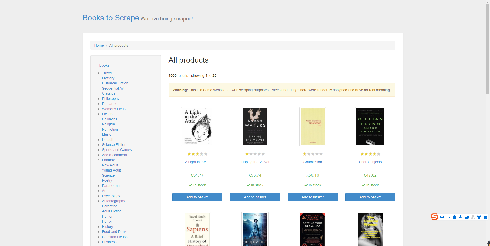
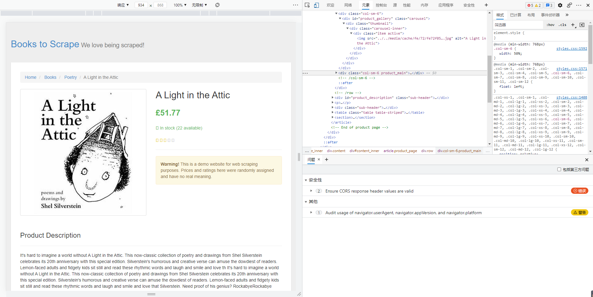
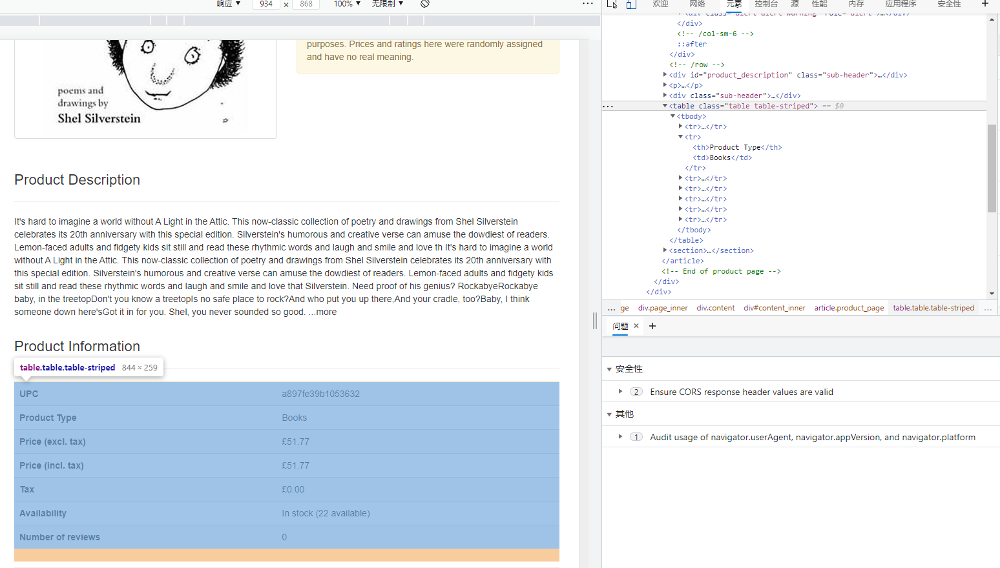
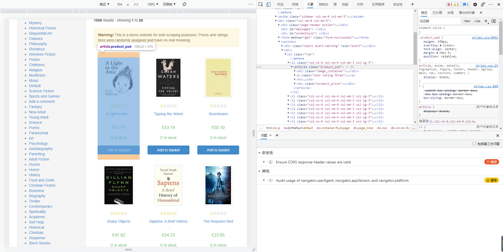

Scrapy项目练习爬取books
本文最后更新于：2021年8月12日 晚上
项目需求
目标网站：http://books.toscrape.com
网站截图：

项目目标：
爬取http://books.toscrape.com网站中的书籍信息。
（1）其中每一本书的信息包括：
➢ 书名
➢ 价格
➢ 评价等级
➢ 产品编码
➢ 库存量
➢ 评价数量
（2）将爬取的结果保存到csv文件中。
页面分析
首先，我们对一本书的页面进行分析。在进行页面分析时，除了之前使用过的Chrome开发者工具外，另一个常用的工具是scrapy shell <URL>命令，它使用户可以在交互式命令行下操作一个Scrapy爬虫，通常我们利用该工具进行前期爬取实验，从而提高开发效率。
接下来分析第一本书的页面，以页面的url地址为参数运行scrapy shell命令：
1 | |
运行这条命令后，scrapy shell会使用url参数构造一个Request对象，并提交给Scrapy引擎，页面下载完成后，程序进入一个python shell当中，在此环境中已经创建好了一些变量（对象和函数），以下几个最为常用：
● request最近一次下载对应的Request对象。
● response最近一次下载对应的Response对象。
● fetch(req_or_url)该函数用于下载页面，可传入一个Request对象或url字符串，调用后会更新变量request和response。
● view(response)该函数用于在浏览器中显示response中的页面。
接下来，在scrapy shell中调用view函数，在浏览器中显示response所包含的页面：
1 | |
可能在很多时候，使用view函数打开的页面和在浏览器直接输入url打开的页面看起来是一样的，但需要知道的是，前者是由Scrapy爬虫下载的页面，而后者是由浏览器下载的页面，有时它们是不同的。在进行页面分析时，使用view函数更加可靠。

从图中看出，我们可在<div class="col-sm-6 product_main">中提取书名、价格、评价等级，在scrapy shell中尝试提取这些信息:
1 | |

另外，可在页面下端位置的<table class="table table-striped">中提取产品编码、库存量、评价数量，在scrapy shell中尝试提取这些信息：
1 | |
分析完书籍页面后，接着分析如何在书籍列表页面中提取每一个书籍页面的链接。在scrapy shell中，先调用fetch函数下载第一个书籍列表页面（http://books.toscrape.com/），下载完成后再调用view函数在浏览器中查看页面：
1 | |

每个书籍页面的链接可以在每个<article class="product_pod">中找到，在scrapy shell中使用LinkExtractor提取这些链接：
1 | |
编码实现
首先创建一个Scrapy项目，取名为toscrape_book。
1 | |
通常，我们不需要手工创建Spider文件以及Spider类，可以使用scrapygenspider<SPIDER_NAME> <DOMAIN>命令生成（根据模板）它们，该命令的两个参数分别是Spider的名字和所要爬取的域（网站）：
1 | |
运行后，scrapy genspider命令创建了文件toscrape_book/spiders/books.py，并在其中创建了一个BooksSpider类，代码如下：
1 | |
实现Spider之前，先定义封装书籍信息的Item类，在toscrape_book/items.py中添加如下代码：
1 | |
接下来，按以下5步完成BooksSpider。
- 步骤01 继承Spider创建
BooksSpider类（已完成）。 - 步骤02 为Spider取名（已完成）。
- 步骤03 指定起始爬取点（已完成）。
- 步骤04 实现书籍列表页面的解析函数。
- 步骤05 实现书籍页面的解析函数。
其中前3步已经由scrapy genspider命令帮我们完成，不需做任何修改。
第4步和第5步的工作是实现两个页面解析函数，因为起始爬取点是一个书籍列表页面，我们就将parse方法作为书籍列表页面的解析函数，另外，还需要添加一个parse_book方法作为书籍页面的解析函数，代码如下：
1 | |
先来完成第4步，实现书籍列表页面的解析函数（parse方法），需要完成以下两个任务：
（1）提取页面中每一个书籍页面的链接，用它们构造Request对象并提交。
（2）提取页面中下一个书籍列表页面的链接，用其构造Request对象并提交。提取链接的具体细节在页面分析时已经讨论过，实现代码如下：
1 | |
本博客所有文章除特别声明外，均采用 CC BY-SA 4.0 协议 ，转载请注明出处！